<!DOCTYPE lake>
<p data-lake-id="ufce59cd7" id="ufce59cd7">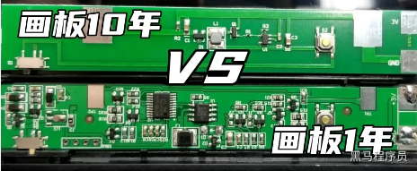</p><p data-lake-id="ub3a5b0ef" id="ub3a5b0ef"><strong><span data-lake-id="u7519afce" id="u7519afce">​</span></strong><br/></p><p data-lake-id="u09fcd1be" id="u09fcd1be"><strong><span data-lake-id="u45ea1a3b" id="u45ea1a3b">洗脸器：</span></strong></p><p data-lake-id="ua38aec2a" id="ua38aec2a"><span data-lake-id="u39939fcd" id="u39939fcd">市场需求分析：消费者对于美容护肤日益关注，洗脸器作为一种提高清洁效果、温和去角质、按摩促进肌肤吸收的工具，市场需求稳定。不同肤质、年龄段和性别的消费者对洗脸器有不同需求。</span></p><p data-lake-id="u17b0b140" id="u17b0b140"><span data-lake-id="uc908b9e0" id="uc908b9e0">可行性研究：洗脸器市场已有众多品牌和产品，但在产品设计、功能和材质方面仍有创新空间。新产品需关注用户需求，提供差异化体验。</span></p><p data-lake-id="u9a45d108" id="u9a45d108">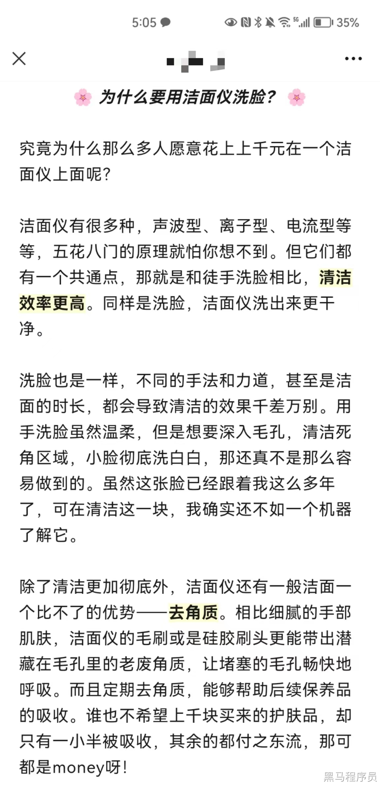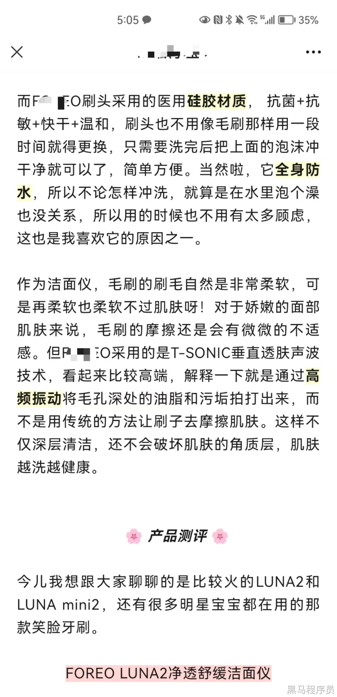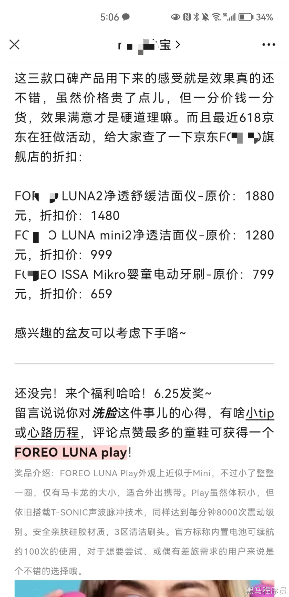</p><p data-lake-id="u542169db" id="u542169db"><span data-lake-id="u2158a40c" id="u2158a40c">​</span><br/></p><p data-lake-id="u41885569" id="u41885569">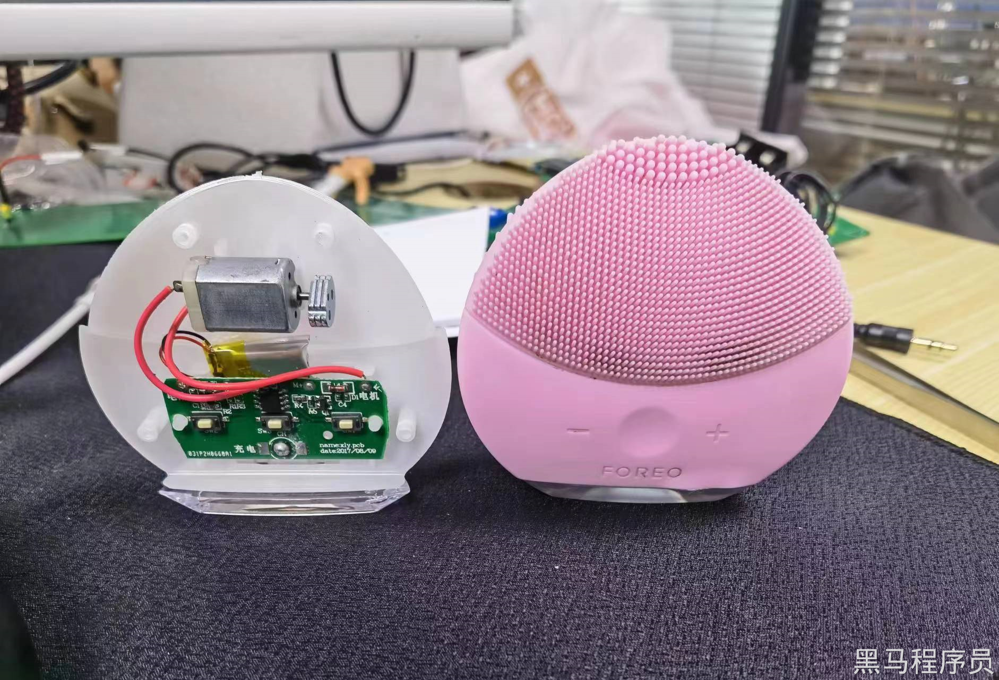</p><p data-lake-id="u6e4fec08" id="u6e4fec08"><br/></p><p data-lake-id="uce1ff643" id="uce1ff643"><strong><span data-lake-id="u37b252a8" id="u37b252a8">智能烘鞋器：</span></strong></p><p data-lake-id="u113ca47d" id="u113ca47d"><span data-lake-id="u4aae2a7b" id="u4aae2a7b">市场需求分析：智能烘鞋器可以满足消费者对于鞋子干燥、杀菌、去除异味的需求。在潮湿天气、雨季或冬季，烘鞋器需求较大。此外，运动爱好者、户外从业者等群体对此类产品有较高需求。</span></p><p data-lake-id="ub068c318" id="ub068c318"><span data-lake-id="u565c76e4" id="u565c76e4">可行性研究：智能烘鞋器的技术已相对成熟，产品制造成本逐渐降低。市场上已有多种烘鞋器产品，但智能化和个性化方面还有改进空间，如智能控温、远程控制等功能。</span></p><p data-lake-id="u845b031d" id="u845b031d">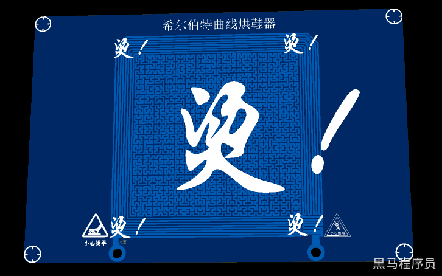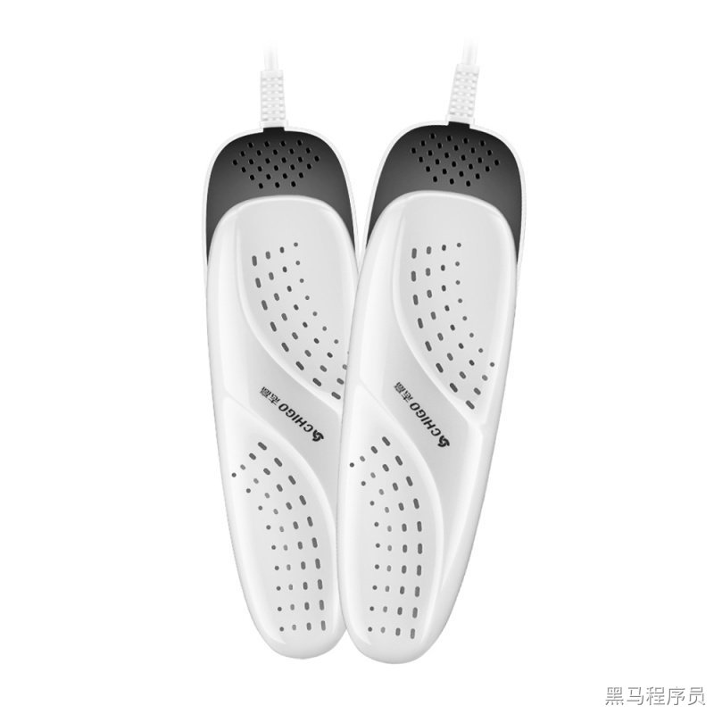</p><p data-lake-id="udbddcc02" id="udbddcc02"><span data-lake-id="u4134c609" id="u4134c609">​</span><br/></p><p data-lake-id="ua5c4a35b" id="ua5c4a35b"><span data-lake-id="ud1f067eb" id="ud1f067eb">​</span><br/></p><p data-lake-id="ua287b0c0" id="ua287b0c0"><strong><span data-lake-id="ua42e9354" id="ua42e9354">智能电动牙刷：</span></strong></p><p data-lake-id="uce7535d1" id="uce7535d1"><span data-lake-id="u35194a5e" id="u35194a5e">市场需求分析：随着人们对口腔健康的重视程度提高，智能电动牙刷市场需求增加。智能电动牙刷能有效清除牙垢、牙菌斑，提升口腔清洁效果。此外，智能功能如刷牙数据追踪、刷牙建议等，吸引了更多消费者。</span></p><p data-lake-id="u74597444" id="u74597444"><span data-lake-id="uf4910bc7" id="uf4910bc7">可行性研究：智能电动牙刷的技术已相对成熟，且市场竞争激烈。新产品需要在功能、设计和用户体验等方面具有创新和差异化，以吸引消费者。</span></p><p data-lake-id="u966a7115" id="u966a7115"><span data-lake-id="uc7ffb901" id="uc7ffb901">​</span><br/></p><p data-lake-id="u3e924f05" id="u3e924f05">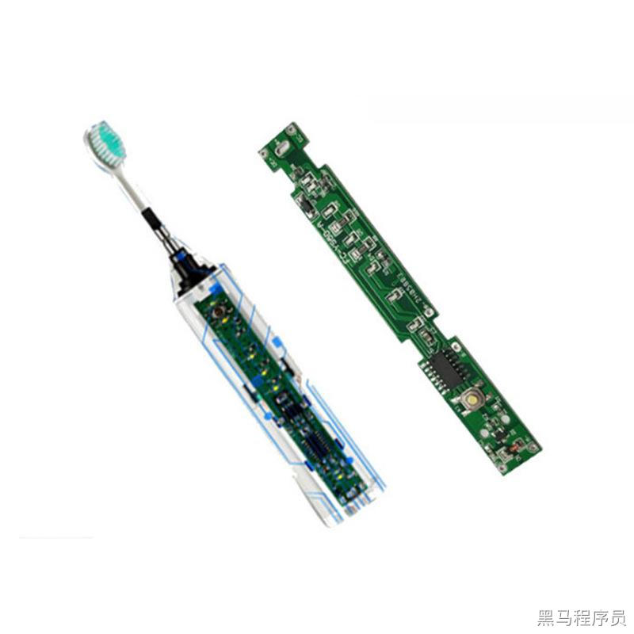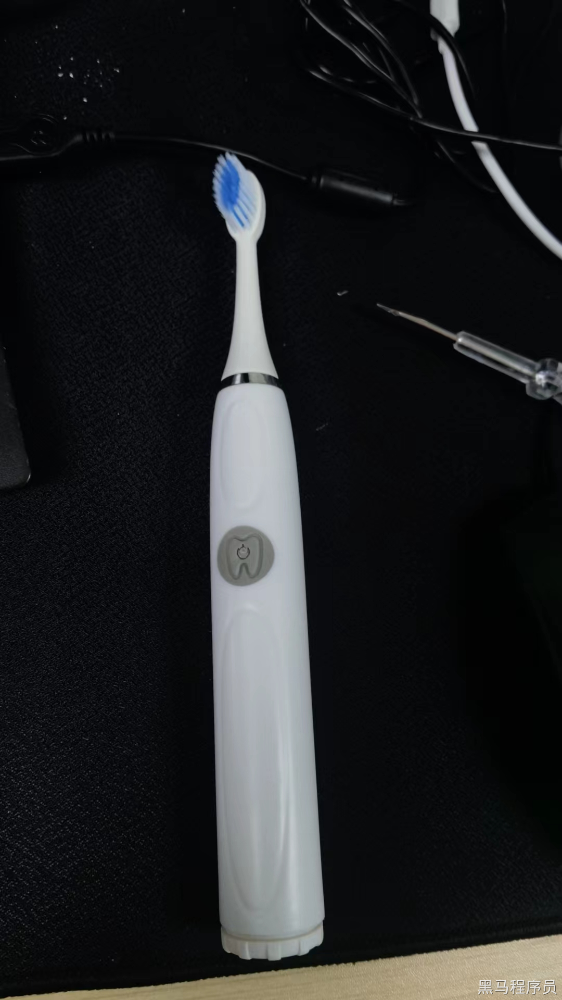</p><p data-lake-id="u05e466bd" id="u05e466bd"><span data-lake-id="u2f6150cd" id="u2f6150cd">​</span><br/></p><p data-lake-id="u0e5f17ed" id="u0e5f17ed"><strong><span data-lake-id="u0e5648f4" id="u0e5648f4">客制化USB键盘：</span></strong></p><p data-lake-id="uf2ecd623" id="uf2ecd623"><span data-lake-id="u1fd1c6ea" id="u1fd1c6ea">市场需求分析：随着移动设备普及，越来越多用户需要在平板、手机等设备上完成工作或学习任务，客制化USB键盘成为必需配件。消费者对usb键盘的有自己特别的要求，开发一款客制化键盘，满足消费者对键盘的特定需求。</span></p><p data-lake-id="u71008983" id="u71008983"><span data-lake-id="u1219aeb6" id="u1219aeb6">​</span><br/></p><p data-lake-id="u47b7efc0" id="u47b7efc0"><span data-lake-id="u57d73698" id="u57d73698">可行性研究：客制化键盘市场处于蓝海阶段，在设计、功能上、兼容性等方面仍有创新和优化空间。新产品需要在这些方面提供更好的用户体验以脱颖而出。 下面是针对程序员和背锅侠开发的两款客制化USB键盘。</span></p><p data-lake-id="u0839ccf3" id="u0839ccf3"><span data-lake-id="ud0d044a1" id="ud0d044a1">​</span><br/></p><p data-lake-id="u3fb9170f" id="u3fb9170f">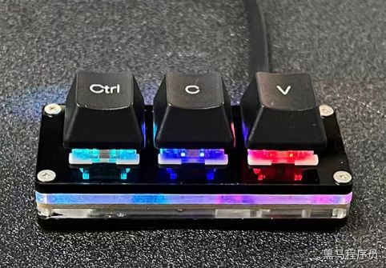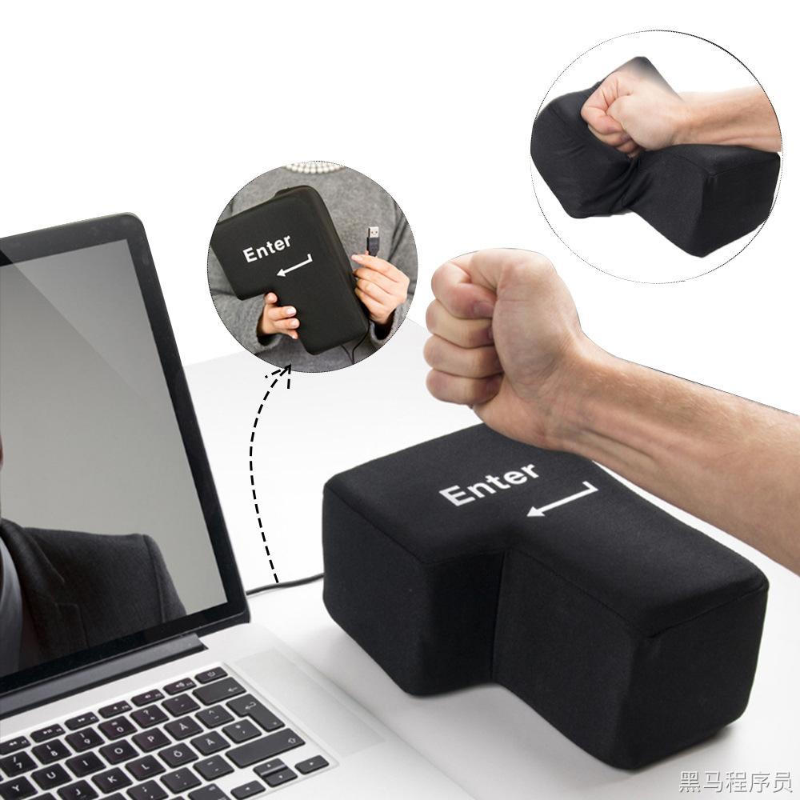</p><p data-lake-id="ua3ee54d2" id="ua3ee54d2"><span data-lake-id="ue992364a" id="ue992364a">​</span><br/></p><p data-lake-id="u409dfedd" id="u409dfedd"><strong><span data-lake-id="u36516f1a" id="u36516f1a">蓝牙小车：</span></strong></p><p data-lake-id="udbb39d6e" id="udbb39d6e"><span data-lake-id="u5b14f2e6" id="u5b14f2e6">市场需求分析：蓝牙小车在儿童玩具、智能家居、机器人教育等领域有市场需求。消费者对蓝牙小车的操作便捷性、互动性和创新程度有较高关注度。家长和教育者则更关注蓝牙小车在培养孩子动手能力、创造力和科学思维方面的作用。</span></p><p data-lake-id="u0b9af80b" id="u0b9af80b"><span data-lake-id="u6cb0c6b7" id="u6cb0c6b7">可行性研究：蓝牙小车市场潜力较大，但竞争也日益激烈。新产品需要在功能、设计、操作体验、教育资源等方面实现差异化和创新，以吸引不同用户群体。</span></p><p data-lake-id="u675d11e6" id="u675d11e6"><span data-lake-id="u54294566" id="u54294566">​</span><br/></p><p data-lake-id="u2af7629c" id="u2af7629c"><span data-lake-id="u232a9ef3" id="u232a9ef3">综上所述，这五个项目在市场需求和可行性方面都具有一定的优势。但在进入市场之前，应充分分析市场竞争态势，关注潜在用户需求，并在产品功能、设计和用户体验等方面持续创新，以实现市场份额的突破。</span></p><p data-lake-id="u0ab13b37" id="u0ab13b37"><span data-lake-id="ub5e140f2" id="ub5e140f2">​</span><br/></p><p data-lake-id="ua0dcf168" id="ua0dcf168">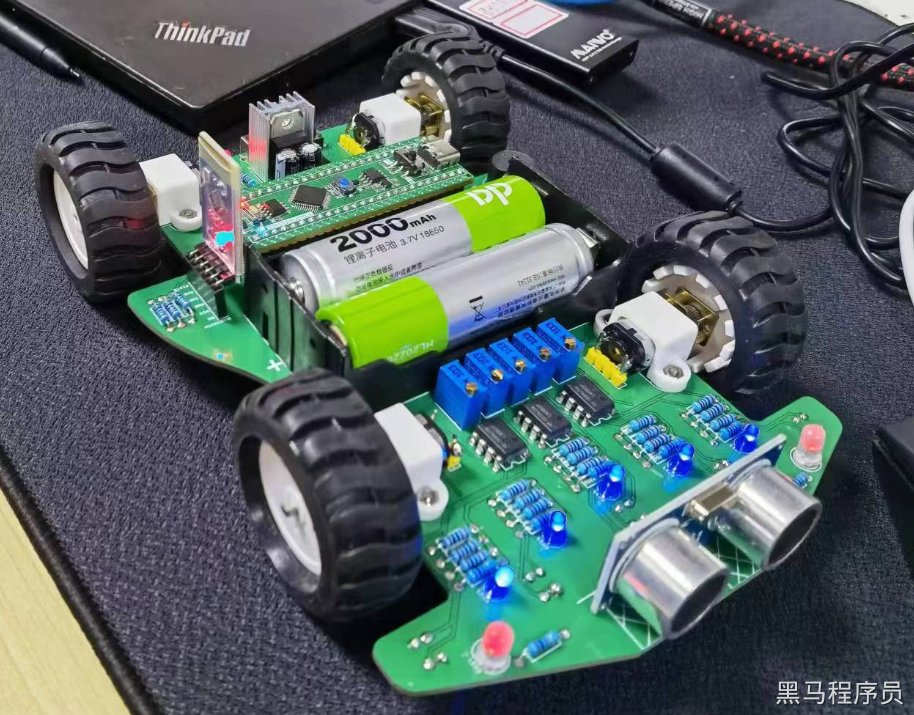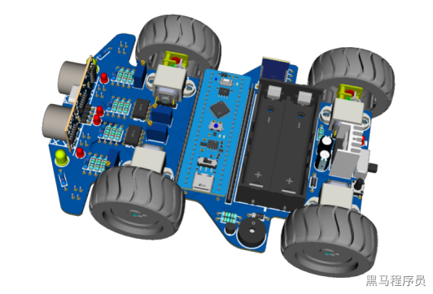</p>